<!DOCTYPE html>
<html lang="es">

	<meta charset="UTF-8">
	<meta http-equiv="X-UA-Compatible" content="IE=edge">
	<meta name="viewport" content="width=device-width, initial-scale=1.0">
	<title>Base 01</title>
	<link rel="preconnect" href="https://fonts.googleapis.com">
        <link rel="preconnect" href="https://fonts.gstatic.com" crossorigin>
		<link href="https://fonts.googleapis.com/css2?family=Dosis:wght@800&family=Permanent+Marker&display=swap" rel="stylesheet">
		<link rel="stylesheet" href="vendor/boxicons/css/boxicons.min.css">
		<link rel="stylesheet" href="css/styles.css">
</html>
<header>
    <a href="#" class="logo"></a>
    <nav>
        <ul id="menu">
            <li><a href="#home">Inicio</a></li>
            <li><a href="#about">Sobre la Empresa</a></li>
            <li><a href="#service">Productos</a></li>
            <li><a href="$portafolio">Lanzamientos</a></li>
            <li><a href="#blog">Noticias Recientes</a></li>
        </ul>
    </nav>
     <div class="bx bx-menu" id="menu-icon"></div>
  </header> 
  <section class="home" id="home">
	<div class="hero-text">
		<h3>JUGAR NO TIENE LIMITES</h3>
		<h1>Somos Playstation</h1>
		<h4>Playstation 2 - Astro Bot - Uncharted</h4>
		<a href="#" class="btn">Nuevos Lanzamientos </a>

	</div>
</section>
<section class="about" id="about">
	<div class="about-img">
		
	</div>
	<div class="about-text">
		<h2>Acerca de Nosotros</h2>
		<h5>Somos una compañia de <span>videojuegos</span> que <span>que no tiene limites</span> </h5>
		<p>Somos PlayStation, una marca global de videojuegos creada y propiedad de Sony Interactive Entertainment. Nuestra aventura comenzó en diciembre de 1994 con el lanzamiento de la primera consola PlayStation en Japón. Desde entonces, hemos seguido innovando y ofreciendo experiencias de juego increíbles a millones de jugadores en todo el mundo.
			Nuestra misión es llevar el entretenimiento interactivo a un nivel superior, creando consolas, servicios y juegos que ofrezcan emoción, desafío y diversión. Con cada generación de consolas, desde la PlayStation original hasta la PlayStation 5, nos esforzamos por superar los límites de lo que es posible en el mundo de los videojuegos.
		</a>

	</div>
</section>
<section class="service" id="service">
	<div class="service-text">
		<h2>Productos</h2>
		<h4></h4>
	</div>
	<div class="service-item">
		<div class="service-box">
			
			<i class="bx bxl-javascript"></i>
			<h3>Consola PlayStation 5 Pro</h3>
			<p>Disfruta los juegos de PS5® con las imágenes más impresionantes posibles hasta ahora en una consola PlayStation.</p>
			<a href="#" class="s-btn">Leer Más</a>
		</div>
		<div class="service-box">
			
			<i class="bx bxl-python"></i>
			<h3>Auriculares inalámbricos PULSE Explore™</h3>
			<p>Disfruta de un sonido de juego hiperrealista dondequiera que juegues gracias al diseño portátil, los micrófonos ocultos integrados y el estuche de carga complementario.</p>
			<a href="#" class="s-btn">Leer Más</a>
		</div>
		<div class="service-box">
			
			<i class="bx bxl-firebase"></i>
			<h3>Control inalámbrico DualSense Edge™</h3>
			<p>Deja tu marca en el juego con botones reasignables, gatillos y joysticks ajustables, tapas de joystick intercambiables, botones traseros y más.</p>
			<a href="#" class="s-btn">Leer Más</a>
		</div>
	</div>

</section>
<section class="portafolio" id="portafolio">
	<div class="portafolio-text">
		<h1>Lanzamientos</h1>
	</div>
	<div class="portafolio-item">
		<div class="portafolio-box">
			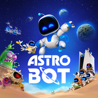
			<h3>ASTRO BOT</h3>
			<p>La Nave nodriza PS5® se ha dañado, dejándolo a ASTRO y su tripulación robótica dispersos por todas las galaxias. Es hora de pilotear tu fiel DualSpeeder por más de 50 planetas llenos de diversión, peligro y sorpresas. En el trayecto, aprovecha al máximo los nuevos poderes de ASTRO y reúnete con muchos héroes icónicos del universo de PlayStation. </p>
			<a href="#" class="s-btn">Leer Más</a>
		</div>
		<div class="portafolio-box">
			
			<h3>Call of Duty®: Black Ops 6</h3>
			<p>Desarrollado por Treyarch y Raven, Black Ops 6 es un thriller de acción y espionaje ambientado a principios de la década de 1990, un período de transición y conmoción en la política mundial marcado por el fin de la Guerra Fría y el ascenso de Estados Unidos como única superpotencia. </p>
			<a href="#" class="s-btn">Leer Más</a>
		</div>
		<div class="portafolio-box">
			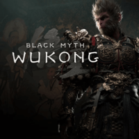
			<h3>Black Myth: Wukong</h3>
			<p>Black Myth: Wukong es un RPG de acción basado en la mitología china y en Viaje al Oeste, una de las cuatro grandes novelas clásicas de la literatura china.</p>
			<a href="#" class="s-btn">Leer Más</a>
		</div>
		<div class="portafolio-box">
			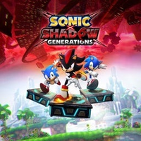
			<h3>Sonic X Shadow Generations</h3>
			<p>Juega con Shadow, el erizo, en una nueva campaña con poderes y habilidades nunca antes vistos. Los fanáticos disfrutarán de esta aventura independiente que ofrece una nueva perspectiva sobre su oscuro pasado.</p>
			<a href="#" class="s-btn">Leer Más</a>
		</div>
		<div class="portafolio-box">
			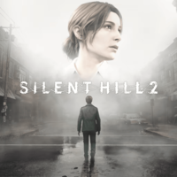
			<h3>Silent Hill 2</h3>
			<p>Experimenta una obra maestra del terror psicológico, considerado como el mejor juego de la saga, en el hardware más avanzado con elementos visuales y sonidos viscerales.</p>
			<a href="#" class="s-btn">Leer Más</a>
		</div>
		<div class="portafolio-box">
			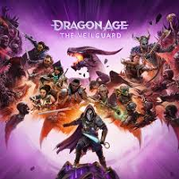
			<h3>Dragon Age: The Veilguard</h3>
			<p>Cuando un par de antiguas divinidades corruptas se liberan de siglos de oscuridad, las tierras vibrantes de Thedas necesitan a alguien en quien puedan confiar.</p>
			<a href="#" class="s-btn">Leer Más</a>
		</div>
		<div class="portafolio-box">
			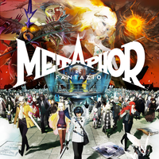
			<h3>Metaphor: ReFantazio</h3>
			<p>Sumérgete en un mundo de fantasía especial por donde el protagonista deberá viajar en compañía del hada Gallica para eliminar la maldición del príncipe perdido del reino.</p>
			<a href="#" class="s-btn">Leer Más</a>
		</div>
		<div class="portafolio-box">
			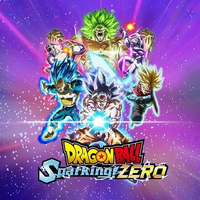
			<h3>Dragon Ball: Sparking! Zero</h3>
			<p>Sacude la tierra. Destruye los cielos. ¡Toma control del poder destructivo de los luchadores más poderosos de todo Dragon Ball!</p>
			<a href="#" class="s-btn">Leer Más</a>
		</div>
		<div class="portafolio-box">
			
			<h3>Warhammer 40,000: Space Marine 2</h3>
			<p>Encarna la habilidad superhumana y la brutalidad de un marine espacial, el mejor de los guerreros del emperador.</p>
			<a href="#" class="s-btn">Leer Más</a>
		</div>
		<div class="portafolio-box">
			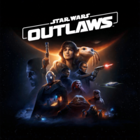
			<h3>Star Wars™ Outlaws</h3>
			<p>Arriesga todo como Kay Vess, una canalla en ascenso que busca la libertad y los medios para comenzar una nueva vida. Lucha, roba y usa tu inteligencia para lidiar con los sindicatos del crimen de la galaxia mientras te conviertes en una de las más buscadas de toda la galaxia. Si te atreves a arriesgarte, la galaxia está repleta de oportunidades.</p>
			<a href="#" class="s-btn">Leer Más</a>
		</div>
		<div class="portafolio-box">
			
			<h3>Helldivers™ 2</h3>
			<p>¿Crees en la libertad? ¿Puedes enfrentar a la opresión y defender a los indefensos? Libra una guerra por la paz. Muere por la democracia.</p>
			<a href="#" class="s-btn">Leer Más</a>
		</div>
		<div class="portafolio-box">
			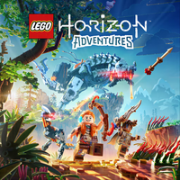
			<h3>LEGO® Horizon Adventures™</h3>
			<p>Únete a la cazadora de máquinas Aloy mientras lidera un pintoresco grupo de héroes a través de la exuberante naturaleza para salvar el mundo y conocer los secretos de su pasado.Sumérgete en aventuras sin límites, personaliza como quieras y libra batallas llenas de acción en solitario o con amigos.</p>
			<a href="#" class="s-btn">Leer Más</a>
		</div>
		
	</div>

</section>
<section class="blog" id="blog">
	<div class="blog-text">
		<h1>Playstation Blog</h1>
	</div>
	<div class="blog-container">
		<div class="blog-contenido">
		  
				<div class="blog-item">
					
					<div class="blog-datos">
						<h3>Monster Hunter Wilds: Reporte de nuestra prueba</h3>
						<p>Explora una nueva frontera salvaje e implacable cuando Monster Hunter Wilds se lance el 28 de febrero en PS5. Hace poco jugamos el Capítulo 1 de la misión principal, llegando hasta gigantescos enemigos, incluyendo al nuevo monstruo Quematrice y explorando Scarlet Forest.</p>

						<p>En anteriores entregas de la serie, varias habilidades de ayuda a la cacería se otorgaban principalmente a través de armadura, talismanes y decoraciones, las cuales combinabas para crear tu build. Sin embargo, en Monster Hunter Wilds, incluso las armas disponibles al comienzo del juego traen Habilidades de Equipo incorporadas adaptadas al tipo de arma. Por ejemplo, la Great Sword Buster Sword I cuenta con Critical Draw, mientras que Bone Blade II ofrece Focus y Attack Boost. Ya que el juego te permite cambiar entre dos armas durante una cacería, es más fácil aprovechar diferentes combinaciones de habilidades si traes armas de ataque cuerpo a cuerpo y de ataque a distancia.</p>
					</div>

				</div>
				<div class="blog-item">
					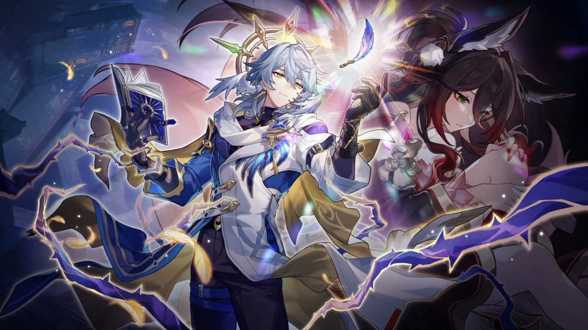
					<div class="blog-datos">
						<h3>Honkai: Star Rail versión 2.7 se despide de Penacony el 4 de diciembre</h3>
						<p>Hola, Trazacaminos, ¡Saludos cordiales del equipo de desarrolladores de Honkai: Star Rail! ¡Cuánto tiempo! Hoy estamos encantados de presentarles la información más reciente de la versión 2.7 «Y al octavo día, partió», que será el último capítulo antes de nuestro viaje a Amphoreus, la tierra eterna. En otras palabras, esta actualización será el epílogo de nuestras aventuras en Colonipenal y el prólogo de la versión 3.0.</p>
						<p>En el capítulo anterior de la historia, Cisne Negro sugirió a la tripulación del Expreso Astral que viajara a Amphoreus, la tierra eterna. Amphoreus es un misterioso lugar que ni siquiera el Eón Trazacaminos Akivili ha visitado. Para asegurarse, la piloto Himeko decidió reunir toda la información posible sobre este destino. Mientras tanto, antes de embarcarse en su próxima aventura, la tripulación hace una última parada en Colonipenal, donde se despiden de viejos amigos y dejan atrás valiosos recuerdos.</p>
					</div>
				</div>
				<div class="blog-item">
					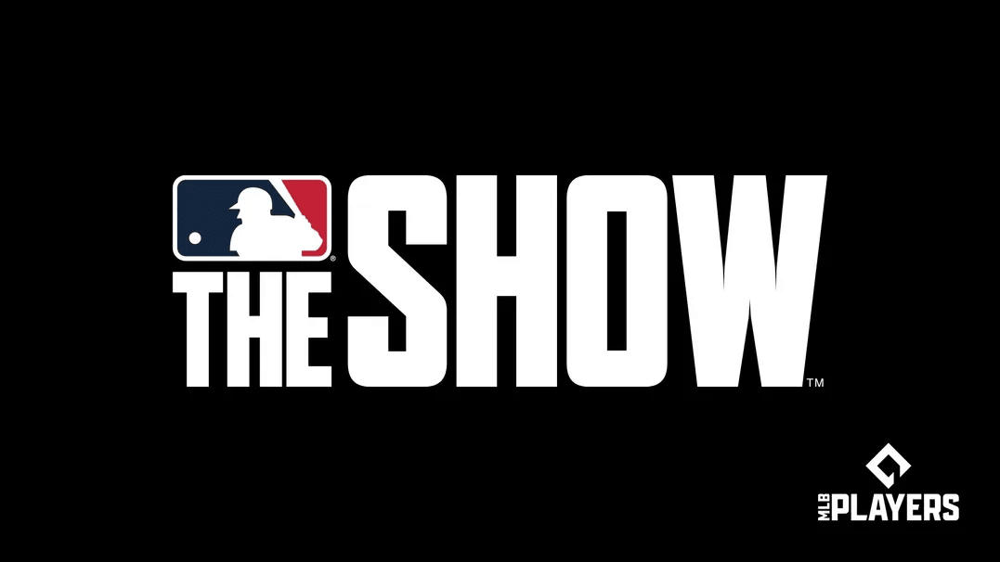
					<div class="blog-datos">
						<h3>Primeros detalles sobre MLB The Show 25, además de una mirada hacia el futuro de MLB The Show</h3>
						<p>La emocionante temporada 2024 de Major League Baseball ya concluyó y, mañana*, con la llegada del contenido de la Temporada 4 de MLB The Show 24, en San Diego Studio hemos querido dedicar un momento a compartir un adelanto del futuro de esta franquicia. </p><p>
						Temporada 4 de MLB The Show 24</p>
                        <p>
						Desde mañana, todos los fans podrán disfrutar de todas las tarjetas de MLB The Show 24 mientras nos adentramos en la temporada 4 con el lanzamiento de lo Mejor del 2024 y más contenido en camino. Sí, esto también significa que también podrán volver a disfrutar de las tarjetas en tu inventario de temporadas anteriores de MLB The Show 24.</p>
					</div>
				</div>
				<div class="blog-item">
					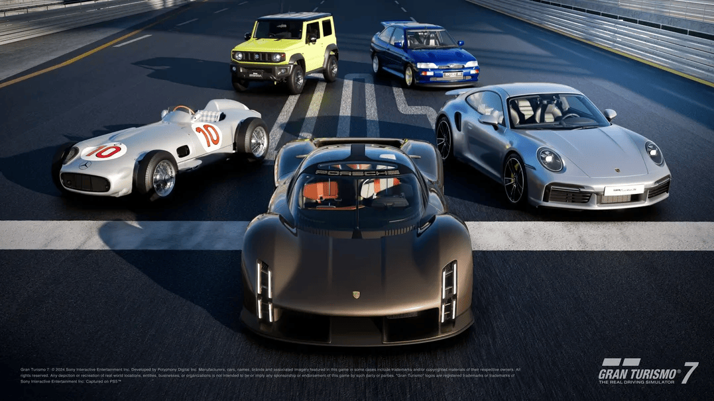
					<div class="blog-datos">
						<h3>La actualización 1.54 de Gran Turismo 7 agrega cinco nuevos autos, un libro de menú del Café, eventos de Circuitos Mundiales y una actualización a la IA de GT Sophy.</h3>
						<p>¡Jugadores de Gran Turismo! La actualización 1.54 trae un sinfín de autos, eventos y desafíos emocionantes, incluida una actualización al agente de IA Gran Turismo Sophy para las pistas clásicas Trial Mountain Circuit y Tokyo Expressway – Este en sentido horario.  ¡No te pierdas la Carrera de Celebración de la Gran Turismo World Series, que te permitirá conducir en las mismas pistas donde se llevaron a cabo las Grandes Finales de este año!</p><p>
						La actualización 1.54* de Gran Turismo 7 estará disponible a partir del miércoles 20 de noviembre a las 22:00 PM Hora del Pacífico.
						</p>
					</div>
				</div>
				<div class="blog-item">
					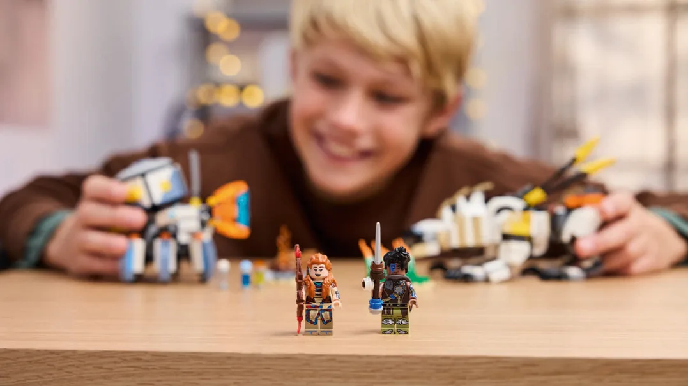
					<div class="blog-datos">
						<h3>Celebremos el lanzamiento de LEGO Horizon Adventures con un nuevo set de LEGO</h3>
						<p>Hola a todos, muchas gracias por todas las maravillosas reacciones al lanzamiento de LEGO Horizon Adventures la semana pasada. Disfrutamos de todos sus comentarios y contenido, y en nombre de Guerrilla y Studio Gobo: ¡Los apreciamos muchísimo!</p>
						<p>Por supuesto, hemos visto muchísimos comentarios desde que se anunció el juego en junio donde nos pedían un nuevo set de LEGO… y algunos de nuestros fans con ojos de águila vieron un adelanto en nuestro video tras bastidores Construyendo el mundo de Aloy - Ladrillo a ladrillo. No podíamos crear un juego de LEGO sin colaborar con nuestros amigos de LEGO Group en algo muy especial:</p>
					</div>
				</div>
				<div class="blog-item">
					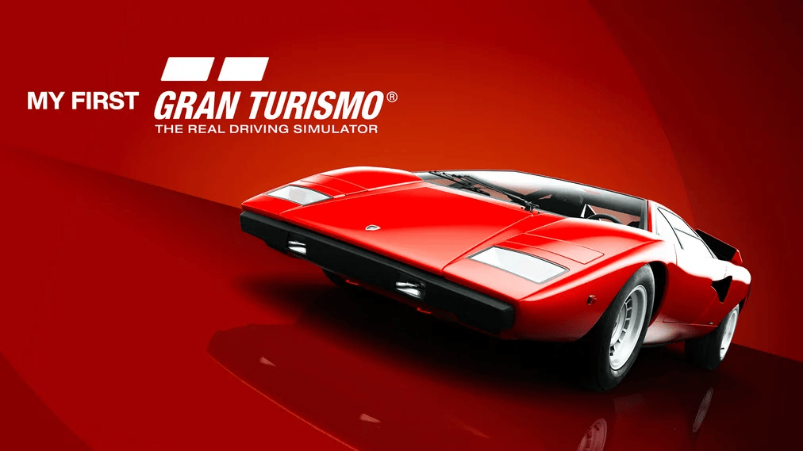
					<div class="blog-datos">
						<h3>My First Gran Turismo se lanzará en PS4 y PS5 el 6 de diciembre</h3>
						<p>Con la celebración del 30.º aniversario de PlayStation, me entusiasma presentar “My First Gran Turismo”, una invitación especial gratuita para adentrarse en el emocionante mundo del automovilismo. Esta experiencia tiene un lugar especial en mi corazón, ya que rinde homenaje a los orígenes del primer Gran Turismo, donde jugadores de todas las generaciones descubrieron el placer de conducir. Ya sea para que los jóvenes conozcan el placer de conducir por primera vez o para volver a encender una pasión olvidada por la conducción, My First Gran Turismo se diseñó para ser accesible e inmersivo, ideal para todos, sin límite de edad o nivel de habilidad de conducción.</p>
						<p>My First Gran Turismo estará disponible en PlayStation Store el viernes 6 de diciembre a las 12:00 AM (hora local). </p>
					</div>
				</div>
				
				
				
		</div>
			

   
		
	</div>


</section>
<section class="contact" id="contact">
	<div class="contact-left">
		<div class="in">
			<i class="bx bxl-instagram"></i>
			<h4>Instagram</h4>
		</div>
		<div class="in">
			<i class="bx bxl-telegram"></i>
			<h4>Telegram</h4>
		</div>
		<div class="in">
			<i class="bx bxl-discord"></i>
			<h4>Discord</h4>
		</div>
	</div>
	<div class="contact-right">
		<h2>Contacto</h2>
		<a href="#">Contactanos</a>
		<p></p>
	</div>
</section>
<a href="#" class="sroll-btn"><i class="bx bx-chevron-up"></i></a>
